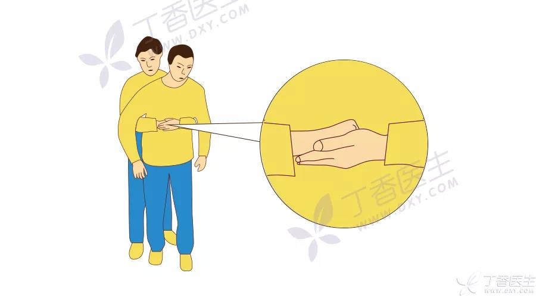
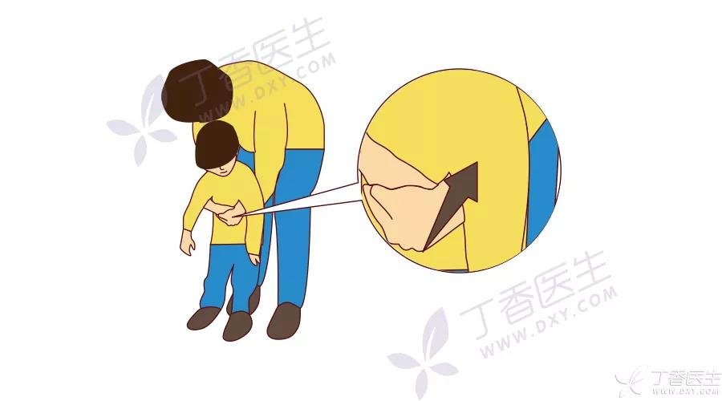
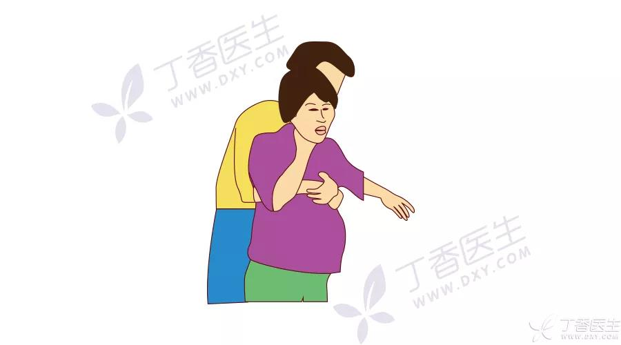
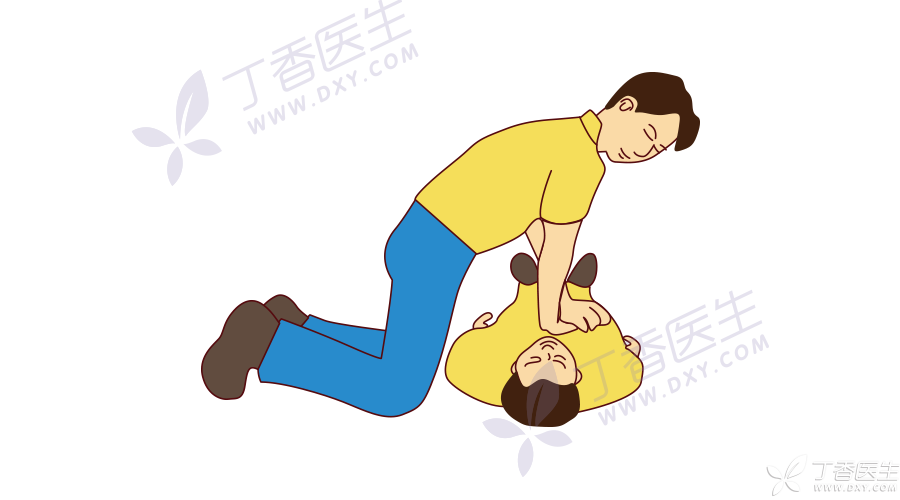
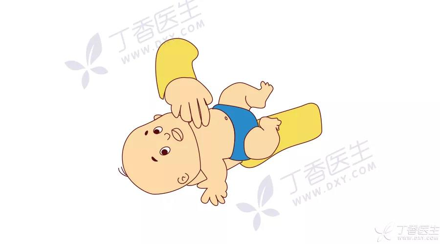
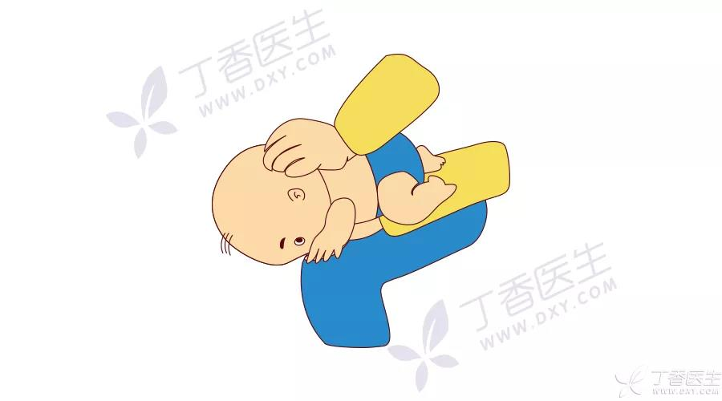
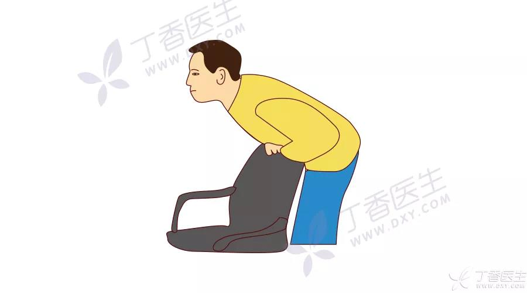

海姆立克
急救技能 3——海姆立克法
什么是海姆立克法
海姆立克法是一种有效对付气道异物梗阻的办法。
如何进行海姆立克法
- 对于清醒的、1 岁以上儿童及成人
- 施救者站在伤者身后，一条腿放在伤者两腿之间，身体贴近伤者后背（如下图）。
- 施救者一手握拳，拳眼对准伤者上腹部（肚脐以上两横指）另一手抓住拳头，用力快速往后上方冲击，直到异物排出或伤者失去反应。

注意事项：
- 握拳后，要用大拇指（拳眼）对准腹部，而不是用四指。
- 对于小朋友，施救者冲击其腹部时要用腿作为支点，不要让小朋友双脚离地（如下图）。

- 对于孕妇和腹部明显肥胖的人，要采用胸部冲击法，冲击的位置在胸骨下半部分（如下图）。

- 鱼刺卡住了不要用海姆立克法急救，赶紧去找五官科或耳鼻喉科医生处理吧。
- 对于失去意识的、1 岁以上儿童及成人
- 让伤者平卧，马上进行心肺复苏，从胸外按压开始。
- 每按压 30 次，检查口腔是否有异物排出。如果有，就小心地清理掉；如果没有，就继续人工呼吸 2 次。
- 如此反复，直到急救人员到达。

- 对于清醒的、1 岁以下的婴儿
- 双指冲击胸部（两乳头连线的中间，如下图）与掌跟背部拍打相结合的方式。

- 胸部按压冲击 5 次，再背部拍打 5 次，交替进行，直到异物排出或者婴儿失去反应（失去反应时进行心肺复苏）。

注意事项：婴儿急救，冲击的是胸部而不是腹部，以免损害婴儿的肝脏。
- 对于自己
- 理论上可以用自己的拳头冲击腹部，或者借助圆钝的椅背冲击上腹部自救（如下图）。但异物梗阻发生时不一定能做出正确反应，所以还是要第一时间向他人求助。
